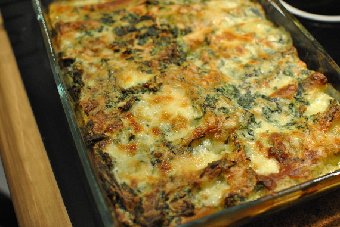

Spinat-Käse-Cannelloni

- Zubereitung: ca. 45 Minuten
- Backzeit: ca. 45 Minuten
- Für 6 Portionen
Zutaten
- 750 g TK-Blattspinat
- 1 Zwiebel
- 1 große Knoblauchzehe
- ca. 50 g Butter
- 2 Eier und 1 Eigelb (Größe M)
- 250 g Ricotta
- 150 g Gorgonzola
- 250 g Cannelloni-Nudeln (ohne Vorkochen)
- 40 g Mehl
- 300 ml Gemüsebrühe
- 300 ml Milch
- 100 g geriebener Parmesan
- Muskatnuss
Zubereitung
- Den Spinat auftauen lassen und grob hacken. Zwiebel und Knoblauch abziehen und beides fein würfeln. In 1/2 EL Butter glasig dünsten, Spinat dazugeben und kurz mitdünsten. Salzen und beiseitestellen. Die Eier und das Eigelb verrühren, Ricotta untermengen.
Gorgonzola zerbröckeln und alles unter den Spinat mischen. Die Cannelloni zu 2/3 mit der Masse füllen. Die Nudeln in eine gebutterte (1/2 EL) Auflaufform geben.
- Den Backofen auf 200° Celsius (Umluft 180° Celsius) vorheizen. 40 g Butter in einem Topf zerlassen, das Mehl einrühren und unter Rühren 1 bis zwei Minuten anschwitzen. Brühe angießen, mit einem Schneebesen gut verrühren. Die Milch gut einrühren,
die Sauce einmal aufkochen lassen. Mit Salz, Pfeffer und Muskat abschmecken. 50 g Parmesan in die Sauce einrühren. Die Bechamel-Sauce über die Cannelloni gießen, mit den übrigen 50 g Parmesan bestreuen. Die Cannelloni im Ofen ca. 45 Minuten backen.